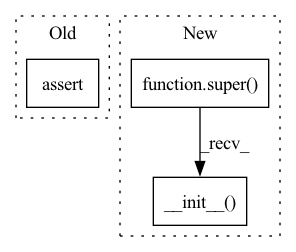

Pattern ID :491
Before Change
self.src_dict = encoder.dictionary
self.dst_dict = decoder.dictionary
assert self.src_dict.pad() == self.dst_dict.pad()
assert self.src_dict.eos() == self.dst_dict.eos()
assert self.src_dict.unk() == self.dst_dict.unk()
self.encoder.num_attention_layers = sum([layer is not None for layer in decoder.attention])After Change
class FConvModel(FairseqModel):
def __init__(self, encoder, decoder):
super().__init__( encoder, decoder)
self.encoder.num_attention_layers = sum(layer is not None for layer in decoder.attention)
class FConvEncoder(FairseqEncoder):In pattern: SUPERPATTERN
Frequency: 10
Non-data size: 3
Instances Fragment ID: 2739273
Project Name: mohammadkhalifa/fairseq-tagging
Commit Name: 6e4b7e22eeb79f7e1c39d862f10ec3e61e51c979
Time: 2017-11-08
Author: myleott@fb.com
File Name: fairseq/models/fconv.py
M Class Name: FConvModel
N Class Name: FConvModel
M Method Name: __init__(3)
N Method Name: __init__(3)
M Parent Class: FairseqModel
N Parent Class: nn.Module
M File Name: fairseq/models/fconv.py
N File Name: fairseq/models/fconv.py
M Start Line: 19
M End Line: 30
N Start Line: 38
N End Line: 39
Before Change
def __init__(self, dec_dims, enc_dims=None):
if enc_dims:
assert enc_dims[0] == dec_dims[-1], "In and Out dimensions must equal to each other"
assert enc_dims[-1] == dec_dims[0], "Latent dimension for encoder and decoder network mismatches."
self.enc_dims = enc_dims
else:
self.enc_dims = dec_dims[::-1]After Change
class VAE_net(AE_net):
def __init__(self, dec_dims, enc_dims=None):
super(VAE_net, self).__init__( dec_dims, enc_dims)
// Last dimension of enc- network is for mean and variance
temp_dims = self.enc_dims[:-1] + [self.enc_dims[-1] * 2]
self.enc_layers = nn.ModuleList( Fragment ID: 2739275
Project Name: makgyver/rectorch
Commit Name: d49e10876913ed7e17e2417d106614214352769f
Time: 2020-02-17
Author: mak1788@gmail.com
File Name: nets.py
M Class Name: VAE_net
N Class Name: VAE_net
M Method Name: __init__(3)
N Method Name: __init__(3)
M Parent Class: AE_net
N Parent Class: AE_net
M File Name: nets.py
N File Name: nets.py
M Start Line: 109
M End Line: 117
N Start Line: 110
N End Line: 110
Before Change
class DistOptimizerHook(OptimizerHook):
def __init__(self, grad_clip=None, coalesce=True, bucket_size_mb=-1):
assert is_distributed()
self.grad_clip = grad_clip
self.coalesce = coalesce
self.bucket_size_mb = bucket_size_mbAfter Change
class DistOptimizerHook(OptimizerHook):
def __init__(self, coalesce=True, bucket_size_mb=-1):
super(DistOptimizerHook, self).__init__()
self._coalesce = coalesce
self._bucket_size_mb = bucket_size_mb
def after_train_iter(self, engine): Fragment ID: 2739274
Project Name: yeliudev/nncore
Commit Name: 37679e2ae736e55218a505c486bea6ae404031f8
Time: 2020-03-18
Author: goolhanrry@gmail.com
File Name: nncore/engine/hooks/optimizer.py
M Class Name: DistOptimizerHook
N Class Name: DistOptimizerHook
M Method Name: __init__(3)
N Method Name: __init__(4)
M Parent Class: OptimizerHook
N Parent Class: OptimizerHook
M File Name: nncore/engine/hooks/optimizer.py
N File Name: nncore/engine/hooks/optimizer.py
M Start Line: 71
M End Line: 75
N Start Line: 68
N End Line: 70
Before Change
def __init__(self, record_loss_per_batch=False):
// Stats
self.fit_res = self.FIT_RESULTS_CLASS(**self.fit_result_init_dict())
assert not (self.fit_res is None)
self.epoch_loss = AverageMeter()
self.epoch_ppl = AverageMeter()
After Change
def __init__(self, record_loss_per_batch=False):
// Stats
super().__init__()
self.epoch_loss = AverageMeter()
self.epoch_ppl = AverageMeter()
self.epoch_meters = [self.epoch_loss, self.epoch_ppl] Fragment ID: 2739276
Project Name: saareliad/ftpipe
Commit Name: c23c4ce21243ca2818460501e36fae0bb3f2db5f
Time: 2020-03-13
Author: saareliad@campus.technion.ac.il
File Name: pipeline/stats/lm.py
M Class Name: LMStats
N Class Name: LMStats
M Method Name: __init__(2)
N Method Name: __init__(2)
M Parent Class: Stats
N Parent Class: Stats
M File Name: pipeline/stats/lm.py
N File Name: pipeline/stats/lm.py
M Start Line: 28
M End Line: 36
N Start Line: 28
N End Line: 28
Before Change
def __init__(self, record_loss_per_batch=False):
// Stats
self.fit_res = self.FIT_RESULTS_CLASS(**self.fit_result_init_dict())
assert not (self.fit_res is None)
self.epoch_loss = AverageMeter()
self.epoch_acc = AccuracyMeter()
After Change
def __init__(self, record_loss_per_batch=False):
// Stats
super().__init__()
self.epoch_loss = AverageMeter()
self.epoch_acc = AccuracyMeter()
Fragment ID: 2739279
Project Name: saareliad/ftpipe
Commit Name: c23c4ce21243ca2818460501e36fae0bb3f2db5f
Time: 2020-03-13
Author: saareliad@campus.technion.ac.il
File Name: pipeline/stats/cv.py
M Class Name: CVStats
N Class Name: CVStats
M Method Name: __init__(2)
N Method Name: __init__(2)
M Parent Class: Stats
N Parent Class: Stats
M File Name: pipeline/stats/cv.py
N File Name: pipeline/stats/cv.py
M Start Line: 27
M End Line: 35
N Start Line: 27
N End Line: 27
Before Change
n_head = map_to_list(kwargs["n_head"], kwargs["n_layer"])
d_head = [kwargs["d_model"] // n_h for n_h in kwargs["n_head"]] if kwargs["d_head"] is None else map_to_list(kwargs["d_head"], kwargs["n_layer"])
assert len(d_inner) == kwargs["n_layer"] and len(n_head) == kwargs["n_layer"] and len(d_head) == kwargs["n_layer"]
kwargs["d_inner"] = d_inner[0]
kwargs["n_head"] = n_head[0]After Change
def __init__(self, **kwargs) -> None:
super().__init__()
self.config = HfTransfoXLConfig(**kwargs)
self.model = TransfoXLLMHeadModel(self.config)
Fragment ID: 2739278
Project Name: microsoft/archai
Commit Name: 42b15a75f9399c07c358acc3277db920dfb95b31
Time: 2022-12-16
Author: gth.rosa@uol.com.br
File Name: archai/nlp/models/hf_transfo_xl/model_hf_transfo_xl.py
M Class Name: HfTransfoXL
N Class Name: HfTransfoXL
M Method Name: __init__(1)
N Method Name: __init__(1)
M Parent Class: ArchaiModel
N Parent Class: ArchaiModel
M File Name: archai/nlp/models/hf_transfo_xl/model_hf_transfo_xl.py
N File Name: archai/nlp/models/hf_transfo_xl/model_hf_transfo_xl.py
M Start Line: 51
M End Line: 68
N Start Line: 22
N End Line: 27
Before Change
num_pixels_exclude_ignored=True => num_mining = (100 - 30) * 0.1 = 7
super().__init__()
assert 0 <= mining_percent <= 1, "mining percent should be a value from 0 to 1"
self.thresh = -torch.log(torch.tensor(threshold, dtype=torch.float))
self.mining_percent = mining_percent
self.ignore_lb = -100 if ignore_lb is None or ignore_lb < 0 else ignore_lbAfter Change
num_pixels_exclude_ignored: bool = True):
ignore_lb = -100 if ignore_lb is None or ignore_lb < 0 else ignore_lb
criteria = nn.CrossEntropyLoss(ignore_index=ignore_lb, reduction="none")
super(OhemCELoss, self).__init__(threshold=threshold,
mining_percent=mining_percent,
ignore_lb=ignore_lb,
num_pixels_exclude_ignored=num_pixels_exclude_ignored,
criteria=criteria)
class OhemBCELoss(OhemLoss):
Fragment ID: 2739266
Project Name: deci-ai/super-gradients
Commit Name: 5fb0d56987546feba941ce68869fbc34caaac23a
Time: 2022-04-19
Author: shay.aharon@deci.ai
File Name: src/super_gradients/training/losses/ohem_ce_loss.py
M Class Name: OhemCELoss
N Class Name: OhemCELoss
M Method Name: __init__(5)
N Method Name: __init__(6)
M Parent Class: OhemLoss
N Parent Class: _Loss
M File Name: src/super_gradients/training/losses/ohem_ce_loss.py
N File Name: src/super_gradients/training/losses/ohem_ce_loss.py
M Start Line: 15
M End Line: 30
N Start Line: 72
N End Line: 78
Before Change
self.mean = mean
self.all_anns = self.load_all_anns(gt_paths)
assert len(self.image_paths) == len(self.all_anns)
self.debug = debug
After Change
Data iteration for TotalText dataset
def __init__(self, train_dir, train_gt_dir, ignore_tags, **kwargs):
super().__init__( train_dir, train_gt_dir, ignore_tags, **kwargs)
def load_metadata(self, img_dir, gt_dir):
img_fps = sorted(glob.glob(os.path.join(img_dir, "*")))
gt_fps = [] Fragment ID: 2739270
Project Name: huyhoang17/db_text_minimal
Commit Name: afea2dfe00db383e3fb9e959e1fcfe375c277c8d
Time: 2020-06-19
Author: hoangphan0710@gmail.com
File Name: src/data_loaders.py
M Class Name: TotalTextDatasetIter
N Class Name: TotalTextDatasetIter
M Method Name: __init__(4)
N Method Name: __init__(12)
M Parent Class: BaseDatasetIter
N Parent Class: Dataset
M File Name: src/data_loaders.py
N File Name: src/data_loaders.py
M Start Line: 36
M End Line: 67
N Start Line: 179
N End Line: 180